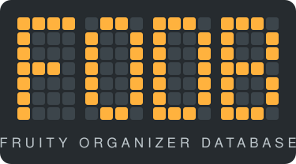
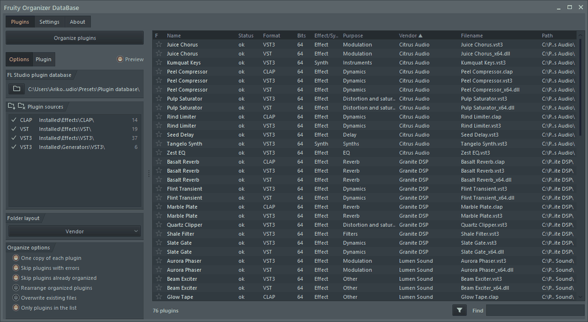

আপনার লাইব্রেরিতে নিখুঁত শৃঙ্খলা।
FL Studio প্লাগইন ডেটাবেসের জন্য একটি পোর্টেবল অর্গানাইজার। এটি প্লাগইনগুলোকে নির্মাতা, ব্যবহার বা উভয় অনুযায়ী ফোল্ডারে সাজায় এবং FL Studio-র সঙ্গে মানানসই দেখায়।
FODB.exe ডাউনলোড করুন
বৈশিষ্ট্য
- নির্মাতা বা ব্যবহার অনুযায়ী সাজান, অথবা যেকোনো ক্রমে নেস্ট করুন: নির্মাতা\ব্যবহার বা ব্যবহার\নির্মাতা
- প্লাগইনটি কী কাজের তা চিহ্নিত করে: রিভার্ব, EQ, ডায়নামিক্স, সিন্থ ও আরও ১৮টি ব্যবহার
- ব্যবহার, নির্মাতা, ফরম্যাট, বিট, অবস্থা, ফাইলের তারিখ, আকার ইত্যাদির ফিল্টার
- FL Studio-র বর্তমান থিম সঙ্গে সঙ্গে অনুসরণ করে
- স্বয়ংক্রিয় ব্যাকআপ, এক ক্লিকে পূর্বাবস্থা, কিছুই ডেটাবেস ফোল্ডারের বাইরে যায় না
- ৯ MB-র একটি ফাইল, ইনস্টলেশন লাগে না; সেটিংস তার পাশেই থাকে
- 26টি ইন্টারফেস ভাষা এবং বিন্যাস, হটকি, স্কেল, ফন্ট, রং ইত্যাদির সেটিংস
দ্রুত শুরু
- FODB.exe ডাউনলোড করে চালান। প্লাগইন ডেটাবেস স্বয়ংক্রিয়ভাবে পাওয়া যায়।
- ফোল্ডার লেআউট বেছে নিন এবং উৎস ও ফিল্টার চালু বা বন্ধ করুন।
- «প্লাগইন সাজান» চাপুন, প্রিভিউ দেখুন, তারপর FL Studio-তে প্লাগইন ব্রাউজার রিফ্রেশ করুন।